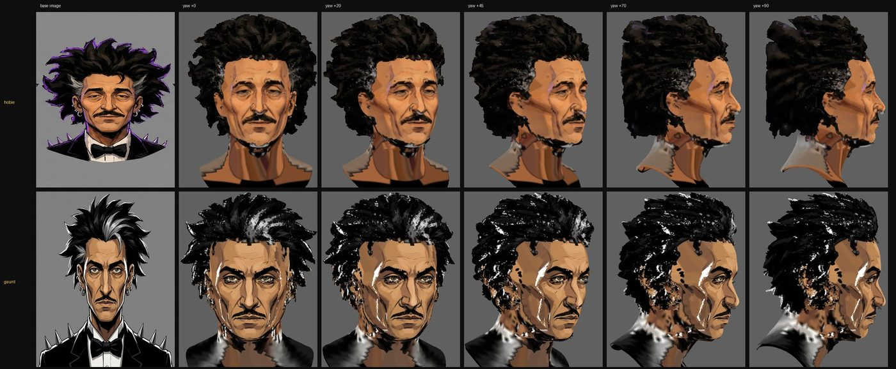

Work
Projects you can open. A card marked with an arrow opens its own page. A card marked with a plus opens here.
Agentic AI
Systems where a model plans and acts through tools, and the tests that show whether it did the job.
-
Done at
 Providioopens here
Providioopens hereThe problem. Hundreds of thousands of signals reach an airline's commercial teams every morning. Each team reads them in its own tools, so the dashboards are current and the decisions are late.
What was built. A harness around a foundation model that gives it context, memory, tools and controls. Every piece of context carries its source, the part of the organization it belongs to and the period it is true for, and code decides what is allowed to act.
The team's public write-up -
sre-incident-envA test of whether an AI agent can fix a simulated production outage, where a wrong fix makes things worse.
Open sourceopens a page
-
Open sourceopens here
The problem. DaVinci Resolve only lets outside programs control it in the paid edition. The free edition runs scripts from its own console and nowhere else.
What was built. An MCP server that writes commands to a folder, and a small Lua loop inside Resolve that runs them. Results come back through the names of exported timelines, because exporting a timeline is something the free edition always allows.
- 9tools exposed to the model, from importing media to rendering
-
Open sourceopens here
The problem. Checking what competitors are advertising means searching ad libraries by hand, one brand and one ad at a time.
What was built. An MCP server that searches a brand's current Meta ads and analyzes the creatives, the messaging and the opening of each video, for one brand or several side by side.
Repository
NLP
Text turned into structure a system can act on.
-
Done at
 CommerceIQopens here
CommerceIQopens hereThe problem. An online store needs every product in the right category for search and recommendations to work. A title alone is often ambiguous, and so is a photo alone.
What was built. A model that joins a ResNet50 image encoder and Jina text embeddings with fully connected layers, trained on product images and titles from two Amazon domains, Grocery and Gourmet and Health and Household. It returns its three best guesses, and when the best is below 0.7 confidence it puts Others first.
- 83%overall accuracy on a held-out validation set, weaker on mixed classes such as assortments and gift packs
- 434categories across the two domains
-
Open sourceopens here
The problem. Saved articles pile up in bookmarks and are never found again, and most tools that fix this keep a copy of your reading on someone else's server.
What was built. A self-hosted system with a browser extension, a phone web app and a Telegram bot for saving. It summarizes and tags each item, links items in a knowledge graph and searches them by meaning.
Repository -
Open sourceoffline, being rebuilt for the phoneopens here
The hosted version is offline. It runs locally, and it is being rebuilt for the phone.
The problem. Finishing a book is not the same as remembering it. Notes and highlights are rarely looked at again.
What was built. A pipeline that reads a PDF or EPUB, finds its chapters, and writes flashcards, then quizzes and summaries from those cards, with a web app that tracks what each reader has learned.
Repository
Classical ML and statistics
Matching, pricing, forecasting and experiments, where the gain is often in the objective and not in a bigger model.
-
From best match to mutual matchA matching system that introduces two people only when each is near the top of the other's list.
Independentopens a page
-
Dating EnvironmentA simulated dating world where you write a matching rule and see how many couples it finds. It approximates the article's method.
Open sourceopens a page
Art and tools
Things made for their own sake, usually for one person's use first.
-
photo-to-paintTurns a photo into a paint-by-numbers kit you can print and paint.
Open sourceopens a page
-
Open sourceopens here
The problem. An image model asked to hold an exact head angle, keep a character's identity and draw in pixel art at once could not do it. Asked for two different angles, it returned the same head.
What was built. A pipeline that splits the job: a mesh and a camera decide the angle, the paintings are projected on as texture, and one small function draws the result in five greys. It is a research prototype.

- 21 of 21acceptance checks passed by the first character. The other characters do not pass yet.
- 420frames in that character's sprite sheet
-
Open sourceopens here
The problem. Short-form video is opened by reflex. App blockers and screen-time charts act after the habit has already started.
What was built. An app that spots the layout of a short-form player in YouTube or Instagram, shows a full-screen reminder and leaves. It has no network permission and no libraries.
- 60 KBsize of the whole app
- about 450lines of Kotlin, small enough to read before trusting it
-
Open sourceopens here
The problem. Ask a language model about a portfolio and it answers from memory: a ratio with no date and a different figure each time.
What was built. A local pipeline for Indian equities and mutual funds that fetches fundamentals and fund prices, stores each with its source and as-of date, scores them with a fixed rubric and writes a digest and a spreadsheet. It is tooling, not investment advice.
Repository
Writing
Articles, newest first, with their titles as published.